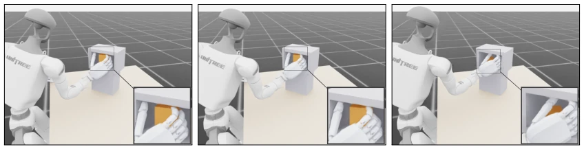
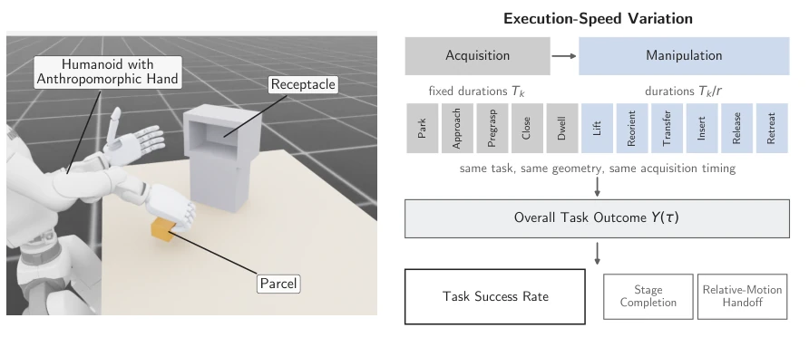
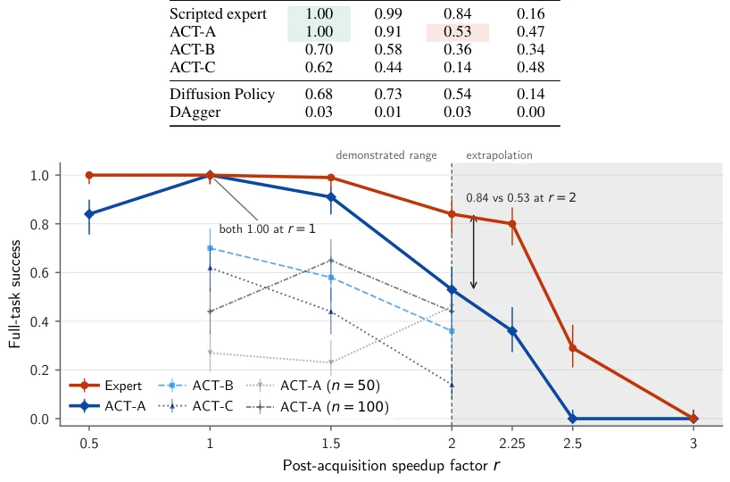
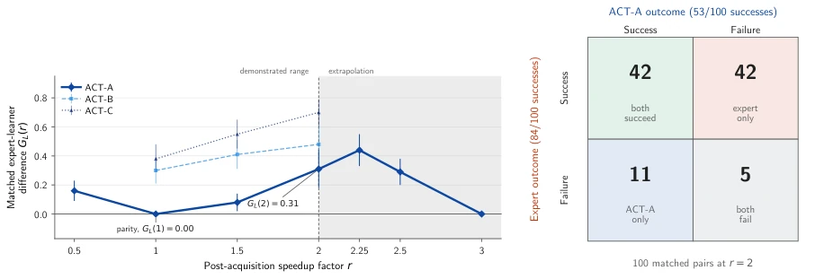
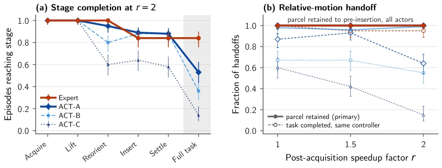
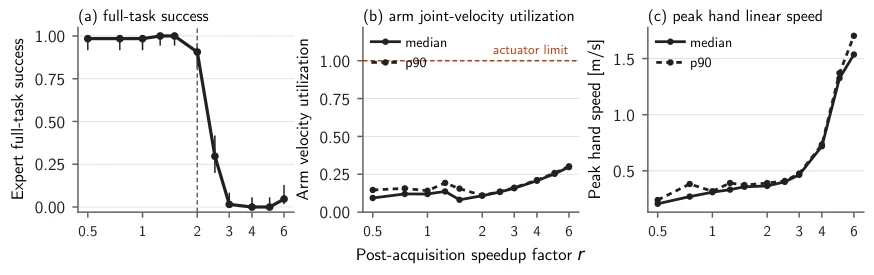
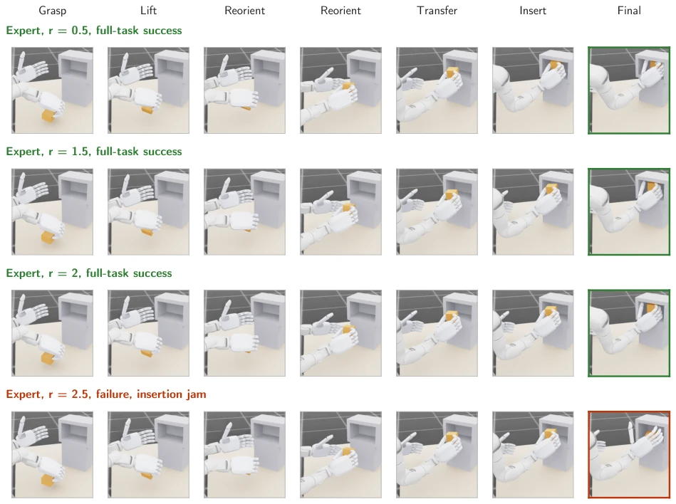
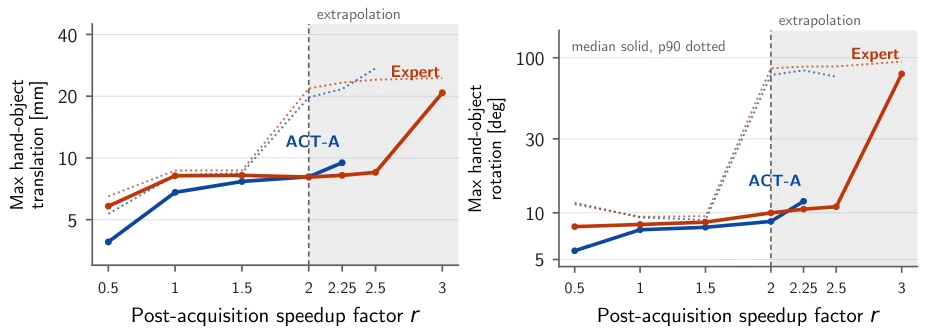
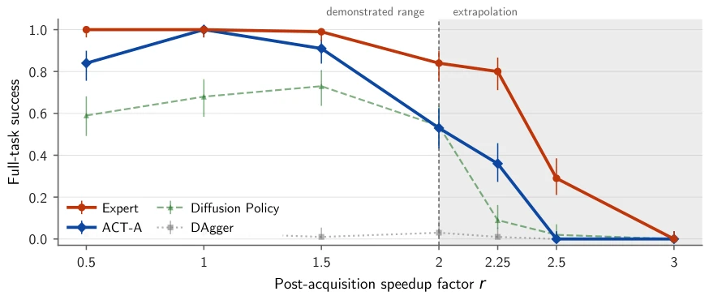

This paper pours cold water on the imitation learning community that blindly worships "nominal success rates". The authors speak with facts: at standard speed, both ACT policies and expert policies can perfectly complete the task, like a pair of twins; but once accelerated, the ACT policy instantly "reveals its true form", success rate plummets cliff-like, while the expert policy remains rock-solid. This is like two students both scoring 100 on an exam, but one studied solidly, while the other just guessed right; once the difficult questions change (acceleration), they are exposed. The biggest criticism of the paper is that it reveals a long-ignored blind spot: existing benchmarks (such as Meta-World, RLBench, etc.) mostly focus on changes in scenes and objects, but rarely test the robustness of execution speed. Although the conclusions are very substantial, the experiments are limited to simulation environments, and the tasks are relatively single; whether it can be generalized to complex dynamic operations in the real world remains to be seen. However, this "finding fault" spirit is worth praising, after all in the field of embodied intelligence, being able to run successfully does not mean being able to run fast, running fast does not mean being able to run steadily.
Existing imitation learning (IL) research, when evaluating policy robustness, often focuses on perturbations of scenes, objects, or instructions, but seriously ignores the key dimension of "execution speed". As shown in literature [1-5], mainstream benchmarks (such as Meta-World, RLBench, CALVIN, etc.) mainly verify the generalization ability of policies under static or slow-speed conditions, but assume policies perform consistently at different speeds. However, in contact-rich dexterous manipulation, changes in execution time will directly lead to drastic changes in speed, acceleration, tracking requirements, and contact transients, thereby affecting task success or failure. Existing acceleration methods (such as DemoSpeedup [6], SAIL [7], SpeedAug [8]) usually evaluate policy performance beyond the demonstration speed range, but lack a rigorous framework for direct comparison between experts and learners at the same speed. This paper aims to fill this gap: if the learner performs perfectly at nominal speed, does it truly inherit the expert's "time robustness"? If not, where does this difference occur? This directly relates to the reliability of imitation learning policies in real-world dynamic scenarios.

Figure 1: Dexterous Insertion at the Maximum Demonstrated Speed. Representative terminal states of the parcel acquisition, reorientation, and insertion task (Sec. 4.1), with magnified views of the receptacle interior. Each subcaption reports the final parcel orientation error; the settling tolerance is 10◦. (a) The expert places the parcel flush and upright, within tolerance. (b) ACT-A leaves the parcel rotated and outside tolerance. (c) DAgger topples the parcel onto its side.

Figure 2: ParcelStow Task, Embodiment, and Variation in Execution Speed. Left, the fixed-base humanoid, parcel, and receptacle with an open front. Right, the phase schedule. Acquisition phases retain their nominal durations Tk, and the durations of manipulation phases are divided by r. Task geometry and acquisition timing remain fixed. Standard evaluation rollouts yield overall and stage-level task outcomes; separate relative-motion handoff rollouts evaluate acquired grasps under shared downstream hand motion.
This paper proposes a controlled benchmark framework named ParcelStow, used to systematically evaluate the performance differences between expert policies and imitation learning policies under different execution speeds. The overall process is as follows: first, construct a contact-rich "parcel stowage" task, containing stages such as grasping, lifting, redirection, transfer, and insertion. Second, define a speed scaling factor r, only compressing the time of operation stages after grasping, keeping the grasping stage and task geometric structure unchanged. Next, under the same initial condition distribution, conduct pairwise evaluation on the expert policy (Scripted Expert) and multiple learner policies (ACT, DAgger, Diffusion Policy). The core innovation lies in introducing a "Relative-Motion Handoff" diagnostic mechanism: after grasping is completed, force all policies to execute the same expert relative motion trajectory, thereby stripping away downstream controller differences and evaluating the robustness of the grasp itself separately. In addition, combined with stage-level failure analysis, hand-object relative motion tracking, and force closure detection, locate the root cause of failure comprehensively. This method does not depend on specific robot embodiments or policy architectures, has universality, and can quantify the success curve difference GL(r) between experts and learners under speed changes.
Experiments are conducted in the Isaac Lab simulation environment, using the Unitree G1 humanoid robot and RealHand dexterous hand. The dataset contains 297 expert demonstrations, covering speed factor r∈[0.5, 2]. Baselines include ACT (three initializations), DAgger, and Diffusion Policy. Evaluation metrics are task success rate, stage completion, and force closure status. Results show: at nominal speed r=1, both ACT-A and expert success rates are 100%; but at maximum demonstration speed r=2, expert drops to 84%, while ACT-A plummets to 53%, a gap of 31 percentage points. Stage analysis shows that ACT-A failures are mainly concentrated in the insertion stage (35/47 times are insertion misalignment). Relative-Motion Handoff experiments prove that ACT-A did not lose the parcel during free-space transfer, failure stems from state error or contact dynamics during insertion. In addition, all grasps that did not meet force closure conditions (414 times) failed, proving force closure is a necessary condition. Ablation experiments show that increasing training data volume improves nominal success rate, but cannot improve robustness at high speeds.

Figure 3: Task Success Across Execution Speeds. Task success against the speedup factor for the phases after acquisition r with Wilson 95% intervals, 100 episodes per point. The expert and ACT-A coincide at r = 1 and differ across the demonstrated speed range r ≤2. ACT-B and ACT-C show larger decreases in success over r ∈[1, 2] than the expert while starting below expert success at r = 1. Gray curves show ACT-A’s configuration retrained on 50 and 100 demonstrations, where nominal success increases with dataset size while success at r = 2 changes little. The shaded band marks extrapolation beyond the demonstrated range, r > 2.

Figure 4: Matched Expert–Learner Comparison at Curve and Episode Levels. (a) GL(r) = bpπE(r) −bpπL(r) with paired bootstrap 95% intervals over matched pairs of initial conditions. ACT-A is shown over the full evaluation grid and ACT-B/C over r ∈{1, 1.5, 2}. ACT-A has equal success with the expert at r = 1, but the difference reaches 0.31 at r = 2 with interval [0.18, 0.44]; its nonzero value at r = 0.5 shows that the equality at r = 1 does not persist across the demonstrated speed range. (b) The 2 × 2 matrix of matched outcomes for the expert and ACT-A at r = 2: both succeed on 42 episodes, the expert alone succeeds on 42, ACT-A alone succeeds on 11, and both fail on 5, giving marginal success counts of 84 and 53. ACT-A succeeds on 11 episodes in which the expert fails, so ACT-A’s failures

Figure 5: Stage Completion and Relative-Motion Handoff. (a) Fraction of episodes reaching each latched stage at r = 2 for the expert and the three ACT policies. The expert and ACT-A coincide through acquisition and lift; their difference first appears at reorientation and is largest after insertion. (b) Solid curves report parcel retention through reorientation and transfer in free space under the expert’s relative hand motion from Eq. (10). Dashed curves report success of the overall task after the same relative-motion law continues through insertion, release, and settling.

Figure 7: Speed Calibration Using the Expert Over the Candidate Grid. (a) Task success with Wilson 95% intervals. (b) Maximum arm joint velocity utilization, median and 90th percentile, against the actuator limit. (c) Peak hand linear speed, median and 90th percentile. The dashed line marks the maximum of the demonstrated speed range, r = 2, chosen without observing any learner outcome.
其他图片Other Figures

Figure 8: Expert Execution Across the Calibrated Speed Range. Task geometry remains fixed while the expert traverses the same manipulation under contracting time budgets.

Figure 9: Hand-Parcel Relative Motion Across Execution Speeds. Median and 90th-percentile peak hand–parcel relative translation (left) and rotation (right) for the expert and ACT-A. Translation and rotation remain limited across the demonstrated range r ≤2, despite the substantial expert–learner difference in task success at r = 2. The shaded region denotes execution speeds outside the demonstrated range.

Figure 10: Baseline Task Success Across the Full Speed Grid. Task success against the speedup factor for the phases after acquisition for the expert, ACT-A, Diffusion Policy, and DAgger, with Wilson 95% intervals over 100 episodes per point. The shaded band marks extrapolation beyond the demonstrated range, r > 2.